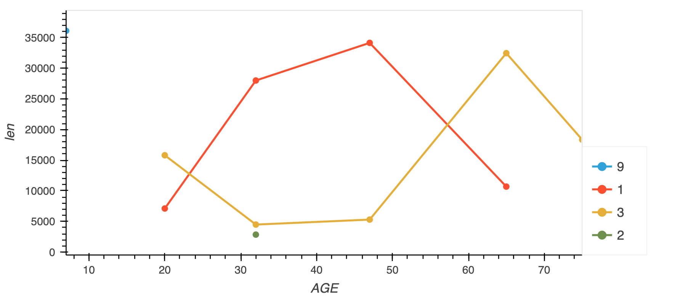
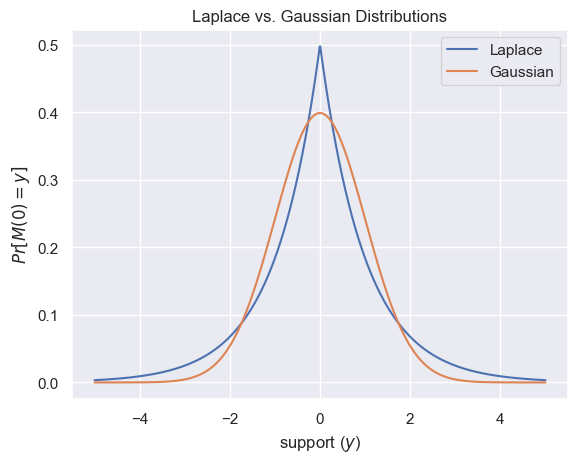

Michael Shoemate, Privacy Architect for the OpenDP Project
Keeping personal information secret, privileged or protected.
Keeping personal information secret, privileged or protected.
Keeping personal information secret, privileged or protected.
Keeping personal information secret, privileged or protected.
Differential privacy is a definition of privacy that mathematically quantifies how much a data release can reveal about any one person in the data.
Differential privacy is a definition of privacy that mathematically quantifies how much a data release can reveal about any one person in the data.
These data releases may be:
Differential privacy is a definition of privacy that mathematically quantifies how much a data release can reveal about any one person in the data.
“Differential” in the sense that the technology obscures the difference between data releases on data sets that differ by one individual.
Differential privacy is a definition of privacy that mathematically quantifies how much a data release can reveal about any one person in the data.
Why we use it:
Differential privacy is a definition of privacy that mathematically quantifies how much a data release can reveal about any one person in the data.
How it is applied:
When applied correctly, an estimator/algorithm/mechanism can be shown to “satisfy” differential privacy.
Differential privacy is a definition of privacy that mathematically quantifies how much a data release can reveal about any one person in the data.
Example count algorithm:
The “privacy loss” of sharing the outcome of this algorithm depends on how many records an individual can contribute to the data, and how much noise is added.
OpenDP is a community effort to build a trustworthy and open-source suite of differential privacy tools that can be easily adopted by custodians of sensitive data to make data releases for research and exploration in the public interest.
OpenDP is a community effort to build a trustworthy and open-source suite of differential privacy tools that can be easily adopted by custodians of sensitive data to make data releases for research and exploration in the public interest.
OpenDP is a community effort to build a trustworthy and open-source suite of differential privacy tools that can be easily adopted by custodians of sensitive data to make data releases for research and exploration in the public interest.
OpenDP is a community effort to build a trustworthy and open-source suite of differential privacy tools that can be easily adopted by custodians of sensitive data to make data releases for research and exploration in the public interest.
OpenDP is a community effort to build a trustworthy and open-source suite of differential privacy tools that can be easily adopted by custodians of sensitive data to make data releases for research and exploration in the public interest.
OpenDP is a community effort to build a trustworthy and open-source suite of differential privacy tools that can be easily adopted by custodians of sensitive data to make data releases for research and exploration in the public interest.
OpenDP is a community effort to build a trustworthy and open-source suite of differential privacy tools that can be easily adopted by custodians of sensitive data to make data releases for research and exploration in the public interest.
First install and import the required dependencies:
%pip install opendp[polars] --preLabour Force Survey microdata released by Eurostat surveys working hours of individuals in the European Union collected on a quarterly cadence
Relevant columns:
>>> context = dp.Context.compositor(
... data=lfs_data,
... privacy_unit=dp.unit_of(contributions=36),
... privacy_loss=dp.loss_of(epsilon=1.0),
... split_evenly_over=5,
... )>>> context = dp.Context.compositor(
... data=lfs_data,
... privacy_unit=dp.unit_of(contributions=36),
... privacy_loss=dp.loss_of(epsilon=1.0),
... split_evenly_over=5,
... )epsilon = 1 is a safe default>>> context = dp.Context.compositor(
... data=lfs_data,
... privacy_unit=dp.unit_of(contributions=36),
... privacy_loss=dp.loss_of(epsilon=1.0),
... split_evenly_over=5,
... )Intuition: Differential privacy is a specialized constraint on the stability of a function.
Functional stability is a property that, given a bounded change in the input to a function, you know the output has a bounded change.
Here, we set a bound on how much the input can change (the privacy unit), and a bound on how much the output can change (the privacy loss).
>>> context = dp.Context.compositor(
... data=lfs_data,
... privacy_unit=dp.unit_of(contributions=36),
... privacy_loss=dp.loss_of(epsilon=1.0),
... split_evenly_over=5,
... )A simple count of the number of individuals in the data.
A simple count of the number of individuals in the data.
With statistical significance alpha = 0.05, or
equivalently with 95% confidence…
>>> query_num_responses.summarize(alpha=0.05)
shape: (1, 5)
┌────────┬──────────────┬─────────────────┬───────┬────────────┐
│ column ┆ aggregate ┆ distribution ┆ scale ┆ accuracy │
│ --- ┆ --- ┆ --- ┆ --- ┆ --- │
│ str ┆ str ┆ str ┆ f64 ┆ f64 │
╞════════╪══════════════╪═════════════════╪═══════╪════════════╡
│ len ┆ Frame Length ┆ Integer Laplace ┆ 180.0 ┆ 539.731115 │
└────────┴──────────────┴─────────────────┴───────┴────────────┘…the true estimate will differ from the noisy estimate by at most 540.
A simple count of the number of individuals in the data.
Assuming the privacy-utility tradeoff is acceptable, submit the query:
>>> query_num_responses.release().collect() # doctest: +SKIP
shape: (1, 1)
┌─────────┐
│ len │
│ --- │
│ u32 │
╞═════════╡
│ 3811915 │
└─────────┘This consumes a portion of the privacy budget.
OpenDP properly accounts for all sources of numerical imprecision and potential overflow in both the implementation of the function, as well as in the privacy analysis.
>>> context = dp.Context.compositor(
... data=lfs_data,
... privacy_unit=dp.unit_of(contributions=36),
... privacy_loss=dp.loss_of(epsilon=1.0),
... split_evenly_over=5,
... margins=[
... dp.polars.Margin(
... # the length of the data is no greater than
... # average quarterly survey size (public)
... # * number of quarters (public)
... max_length=150_000 * 36
... # Remember to only use public information
... ),
... ],
... )max_length records.>>> query_work_hours = (
... context.query()
... .filter(pl.col.HWUSUAL != 99.0)
... .select(
... pl.col.HWUSUAL.cast(int).fill_null(35).dp.mean(bounds=(0, 80))
... )
... )Preprocessing:
>>> query_work_hours = (
... context.query()
... .filter(pl.col.HWUSUAL != 99.0)
... .select(
... pl.col.HWUSUAL.cast(int).fill_null(35).dp.mean(bounds=(0, 80))
... )
... )With 95% confidence, the DP sum release will differ from the exact sum by at most 86,000.
>>> query_work_hours.summarize(alpha=0.05)
shape: (2, 5)
┌─────────┬───────────┬─────────────────┬─────────┬──────────────┐
│ column ┆ aggregate ┆ distribution ┆ scale ┆ accuracy │
│ --- ┆ --- ┆ --- ┆ --- ┆ --- │
│ str ┆ str ┆ str ┆ f64 ┆ f64 │
╞═════════╪═══════════╪═════════════════╪═════════╪══════════════╡
│ HWUSUAL ┆ Sum ┆ Integer Laplace ┆ 28800.0 ┆ 86277.589474 │
│ HWUSUAL ┆ Length ┆ Integer Laplace ┆ 360.0 ┆ 1078.963271 │
└─────────┴───────────┴─────────────────┴─────────┴──────────────┘The mean independently estimates a sum and a count:
>>> query_work_hours = (
... context.query()
... .filter(pl.col.HWUSUAL != 99.0)
... .select(
... pl.col.HWUSUAL.cast(int).fill_null(35).dp.mean(bounds=(0, 80)),
... )
... )
>>> query_work_hours.summarize(alpha=0.05)
shape: (2, 5)
┌─────────┬───────────┬─────────────────┬─────────┬──────────────┐
│ column ┆ aggregate ┆ distribution ┆ scale ┆ accuracy │
│ --- ┆ --- ┆ --- ┆ --- ┆ --- │
│ str ┆ str ┆ str ┆ f64 ┆ f64 │
╞═════════╪═══════════╪═════════════════╪═════════╪══════════════╡
│ HWUSUAL ┆ Sum ┆ Integer Laplace ┆ 28800.0 ┆ 86277.589474 │
│ HWUSUAL ┆ Length ┆ Integer Laplace ┆ 360.0 ┆ 1078.963271 │
└─────────┴───────────┴─────────────────┴─────────┴──────────────┘The privacy budget allocated to this query is partitioned amongst the two statistics.
You can equivalently estimate the sum and count separately:
>>> query_work_hours = (
... context.query()
... .filter(pl.col.HWUSUAL != 99.0)
... .select(
... pl.col.HWUSUAL.cast(int).fill_null(35).dp.sum(bounds=(0, 80)),
... dp.len()
... )
... )
>>> query_work_hours.summarize(alpha=0.05)
shape: (2, 5)
┌─────────┬──────────────┬─────────────────┬─────────┬──────────────┐
│ column ┆ aggregate ┆ distribution ┆ scale ┆ accuracy │
│ --- ┆ --- ┆ --- ┆ --- ┆ --- │
│ str ┆ str ┆ str ┆ f64 ┆ f64 │
╞═════════╪══════════════╪═════════════════╪═════════╪══════════════╡
│ HWUSUAL ┆ Sum ┆ Integer Laplace ┆ 28800.0 ┆ 86277.589474 │
│ len ┆ Frame Length ┆ Integer Laplace ┆ 360.0 ┆ 1078.963271 │
└─────────┴──────────────┴─────────────────┴─────────┴──────────────┘Under “Bounded-DP”, the number of records in the dataset is not considered public information.
>>> # apply domain descriptors (margins) to preprocessed data
>>> context_bounded_dp = dp.Context.compositor(
... # apply some preprocessing outside of OpenDP
... # drops "Not applicable" values
... data=lfs_data.filter(pl.col.HWUSUAL != 99),
... privacy_unit=dp.unit_of(contributions=36),
... privacy_loss=dp.loss_of(epsilon=1.0),
... split_evenly_over=5,
... margins=[
... dp.polars.Margin(
... max_length=150_000 * 36,
... # ADDITIONAL CODE STARTING HERE
... # don't protect the total number of records (bounded-DP)
... invariant="lengths",
... ),
... ],
... )
>>> query_mean_work_hours = context_bounded_dp.query().select(
... pl.col.HWUSUAL.cast(int).fill_null(35).dp.mean(bounds=(0, 80))
... )
>>> query_mean_work_hours.summarize(alpha=0.05)
shape: (2, 5)
┌─────────┬───────────┬─────────────────┬────────┬──────────────┐
│ column ┆ aggregate ┆ distribution ┆ scale ┆ accuracy │
│ --- ┆ --- ┆ --- ┆ --- ┆ --- │
│ str ┆ str ┆ str ┆ f64 ┆ f64 │
╞═════════╪═══════════╪═════════════════╪════════╪══════════════╡
│ HWUSUAL ┆ Sum ┆ Integer Laplace ┆ 7200.0 ┆ 21569.772352 │
│ HWUSUAL ┆ Length ┆ Integer Laplace ┆ 0.0 ┆ NaN │
└─────────┴───────────┴─────────────────┴────────┴──────────────┘
>>> query_mean_work_hours.release().collect() # doctest: +SKIP
shape: (1, 1)
┌───────────┐
│ HWUSUAL │
│ --- │
│ f64 │
╞═══════════╡
│ 37.645122 │
└───────────┘>>> candidates = list(range(20, 60))
>>> query_multi_quantiles = (
... context.query()
... .filter(pl.col.HWUSUAL != 99.0)
... .select(
... pl.col.HWUSUAL.fill_null(35).fill_nan(35) \
... .dp.quantile(a, candidates).alias(f"{a}-Quantile")
... for a in [0.25, 0.5, 0.75]
... )
... )
>>> query_multi_quantiles.summarize()
shape: (3, 4)
┌───────────────┬───────────────┬──────────────┬────────┐
│ column ┆ aggregate ┆ distribution ┆ scale │
│ --- ┆ --- ┆ --- ┆ --- │
│ str ┆ str ┆ str ┆ f64 │
╞═══════════════╪═══════════════╪══════════════╪════════╡
│ 0.25-Quantile ┆ 0.25-Quantile ┆ GumbelMin ┆ 3240.0 │
│ 0.5-Quantile ┆ 0.5-Quantile ┆ GumbelMin ┆ 1080.0 │
│ 0.75-Quantile ┆ 0.75-Quantile ┆ GumbelMin ┆ 3240.0 │
└───────────────┴───────────────┴──────────────┴────────┘>>> context = dp.Context.compositor(
... data=lfs_data,
... privacy_unit=dp.unit_of(contributions=36),
... privacy_loss=dp.loss_of(epsilon=1.0 / 4, delta=1e-7),
... # allow for one query
... split_evenly_over=1,
... )
>>> query_age_ilostat = (
... context.query()
... .group_by("AGE", "ILOSTAT")
... .agg(dp.len())
... )
>>> query_age_ilostat.summarize()
shape: (1, 5)
┌────────┬──────────────┬─────────────────┬───────┬───────────┐
│ column ┆ aggregate ┆ distribution ┆ scale ┆ threshold │
│ --- ┆ --- ┆ --- ┆ --- ┆ --- │
│ str ┆ str ┆ str ┆ f64 ┆ u32 │
╞════════╪══════════════╪═════════════════╪═══════╪═══════════╡
│ len ┆ Frame Length ┆ Integer Laplace ┆ 144.0 ┆ 2773 │
└────────┴──────────────┴─────────────────┴───────┴───────────┘
>>> df = query_age_ilostat.release().collect()
Reusing the key-set released in the previous query:
>>> context = dp.Context.compositor(
... data=lfs_data,
... privacy_unit=dp.unit_of(contributions=36),
... privacy_loss=dp.loss_of(epsilon=1.0 / 4),
... split_evenly_over=1,
... margins=[dp.polars.Margin(max_length=150_000 * 36)],
... )
>>> query_age_ilostat = (
... context.query()
... .group_by("AGE", "ILOSTAT")
... .agg(pl.col.HWUSUAL.fill_null(35).fill_nan(35).dp.sum((0, 80)))
... .with_keys(df["AGE", "ILOSTAT"])
... )
>>> query_age_ilostat.summarize()
shape: (1, 4)
┌─────────┬───────────┬───────────────┬──────────────┐
│ column ┆ aggregate ┆ distribution ┆ scale │
│ --- ┆ --- ┆ --- ┆ --- │
│ str ┆ str ┆ str ┆ f64 │
╞═════════╪═══════════╪═══════════════╪══════════════╡
│ HWUSUAL ┆ Sum ┆ Float Laplace ┆ 11578.014393 │
└─────────┴───────────┴───────────────┴──────────────┘Stable transformations in with_columns:
Stable transformations in group_by:
>>> # the PIDENT column contains individual identifiers
>>> # an individual may contribute data under at most 1 PIDENT identifier
>>> privacy_unit = dp.unit_of(contributions=1, identifier=pl.col("PIDENT"))
>>> context = dp.Context.compositor(
... data=lfs_data,
... privacy_unit=privacy_unit,
... privacy_loss=dp.loss_of(epsilon=1.0, delta=1e-8),
... split_evenly_over=4,
... margins=[dp.polars.Margin(max_length=150_000 * 36)],
... )
>>> query = (
... context.query()
... .filter(pl.col.HWUSUAL != 99)
... .truncate_per_group(10)
... # ...is equivalent to:
... # .filter(pl.int_range(pl.len()).over("PIDENT") < 10)
... .select(pl.col.HWUSUAL.cast(int).fill_null(0).dp.mean((0, 80)))
... )
>>> query.summarize()
shape: (2, 4)
┌─────────┬───────────┬─────────────────┬────────┐
│ column ┆ aggregate ┆ distribution ┆ scale │
│ --- ┆ --- ┆ --- ┆ --- │
│ str ┆ str ┆ str ┆ f64 │
╞═════════╪═══════════╪═════════════════╪════════╡
│ HWUSUAL ┆ Sum ┆ Integer Laplace ┆ 6400.0 │
│ HWUSUAL ┆ Length ┆ Integer Laplace ┆ 80.0 │
└─────────┴───────────┴─────────────────┴────────┘>>> query = (
... context.query()
... .filter(pl.col.HWUSUAL != 99)
... .group_by(pl.col.PIDENT) # truncation begins here
... .agg(pl.col.HWUSUAL.mean()) # arbitrary expressions can be used here
... .select(pl.col.HWUSUAL.cast(int).fill_null(0).dp.mean((0, 80)))
... )
>>> query.summarize()
shape: (2, 4)
┌─────────┬───────────┬─────────────────┬───────┐
│ column ┆ aggregate ┆ distribution ┆ scale │
│ --- ┆ --- ┆ --- ┆ --- │
│ str ┆ str ┆ str ┆ f64 │
╞═════════╪═══════════╪═════════════════╪═══════╡
│ HWUSUAL ┆ Sum ┆ Integer Laplace ┆ 640.0 │
│ HWUSUAL ┆ Length ┆ Integer Laplace ┆ 8.0 │
└─────────┴───────────┴─────────────────┴───────┘>>> quarterly = [pl.col.QUARTER, pl.col.YEAR]
>>> query = (
... context.query()
... .filter(pl.col.HWUSUAL != 99)
... .truncate_per_group(1, by=quarterly)
... .truncate_num_groups(10, by=quarterly)
... .group_by(quarterly)
... .agg(dp.len(), pl.col.HWUSUAL.cast(int).fill_null(0).dp.sum((0, 80)))
... )
>>> query.summarize()
shape: (2, 5)
┌─────────┬──────────────┬─────────────────┬────────┬───────────┐
│ column ┆ aggregate ┆ distribution ┆ scale ┆ threshold │
│ --- ┆ --- ┆ --- ┆ --- ┆ --- │
│ str ┆ str ┆ str ┆ f64 ┆ u32 │
╞═════════╪══════════════╪═════════════════╪════════╪═══════════╡
│ len ┆ Frame Length ┆ Integer Laplace ┆ 80.0 ┆ 1714 │
│ HWUSUAL ┆ Sum ┆ Integer Laplace ┆ 6400.0 ┆ null │
└─────────┴──────────────┴─────────────────┴────────┴───────────┘>>> privacy_loss = dp.loss_of(rho=0.5, delta=1e-8)
>>> context = dp.Context.compositor(
... data=lfs_data,
... privacy_unit=dp.unit_of(contributions=1, identifier=pl.col("PIDENT")),
... privacy_loss=privacy_loss,
... split_evenly_over=4,
... margins=[dp.polars.Margin(max_length=150_000 * 36)],
... )Re-running the previous query, but this time under zCDP:
>>> quarterly = [pl.col.QUARTER, pl.col.YEAR]
>>> query = (
... context.query()
... .filter(pl.col.HWUSUAL != 99)
... .truncate_per_group(1, by=quarterly)
... .truncate_num_groups(10, by=quarterly)
... .group_by(quarterly)
... .agg(dp.len(), pl.col.HWUSUAL.cast(int).fill_null(0).dp.sum((0, 80)))
... )
>>> query.summarize()
shape: (2, 5)
┌─────────┬──────────────┬──────────────────┬────────────┬───────────┐
│ column ┆ aggregate ┆ distribution ┆ scale ┆ threshold │
│ --- ┆ --- ┆ --- ┆ --- ┆ --- │
│ str ┆ str ┆ str ┆ f64 ┆ u32 │
╞═════════╪══════════════╪══════════════════╪════════════╪═══════════╡
│ len ┆ Frame Length ┆ Integer Gaussian ┆ 8.944272 ┆ 57 │
│ HWUSUAL ┆ Sum ┆ Integer Gaussian ┆ 715.541753 ┆ null │
└─────────┴──────────────┴──────────────────┴────────────┴───────────┘
>>> context = dp.Context.compositor(
... data=[1., 4., 7.],
... privacy_unit=dp.unit_of(l1=1.),
... privacy_loss=dp.loss_of(epsilon=1.0),
... split_evenly_over=1,
... domain=dp.vector_domain(dp.atom_domain(T=float, nan=False)),
... )
>>> query_lap = context.query().laplace()
>>> query_lap.param()
1.0
>>> query_lap.resolve()
Measurement(
input_domain = VectorDomain(AtomDomain(T=f64)),
input_metric = L1Distance(f64),
output_measure = MaxDivergence)
>>> query_lap.release() # doctest: +SKIP
[0.7077237243471377, 4.827747780105709, 5.908376498290111]>>> m_lap = dp.m.make_laplace(
... input_domain=dp.vector_domain(dp.atom_domain(T=float, nan=False)),
... input_metric=dp.l1_distance(T=float),
... scale=1.0
... )
>>> m_lap
Measurement(
input_domain = VectorDomain(AtomDomain(T=f64)),
input_metric = L1Distance(f64),
output_measure = MaxDivergence)
>>> m_lap.map(d_in=1.0)
1.0
>>> m_lap([1., 4., 7.]) # doctest: +SKIP
[1.8894052083047814, 5.543928329362439, 6.961532708302391]>>> context = dp.Context.compositor(
... data=True,
... privacy_unit=dp.unit_of(local=True),
... privacy_loss=dp.loss_of(epsilon=1.0),
... split_evenly_over=1,
... )
>>> query_rr = context.query().randomized_response_bool()
>>> query_rr.param()
0.7310585786300048
>>> query_rr.resolve()
Measurement(
input_domain = AtomDomain(T=bool),
input_metric = DiscreteDistance(),
output_measure = MaxDivergence)
>>> query_rr.release() # doctest: +SKIP
[0.7077237243471377, 4.827747780105709, 5.908376498290111]Measurement
Transformation

| language | functionality |
|---|---|
| Rust | core mechanisms, Polars, native transformations |
| Python | Rust functionality, Context API, Plugins, scikit-learn |
| R | Rust functionality (except Polars) |
| C | Rust functionality |
Researchers at the University of Vermont are conducting a remote usability study to evaluate two different interfaces for privacy-enhancing data science tools. We are looking for participants who
In this study, you will be asked to:
All study procedures will take approximately 1 to 1.5 hours via a Microsoft Teams meeting, the study session will be screen and audio recorded. After completion, you will receive a $40 electronic gift card of your choice (e.g., Amazon.com, Walmart) as a thank-you for your time. If interested, please fill out this online eligibility survey.
If you are selected to participate, we will reach out to you via email typically within 2 weeks. If you have additional questions about participating in this study, please contact the principal investigator, Onyinye Dibia by email Onyinye.Dibia@uvm.edu